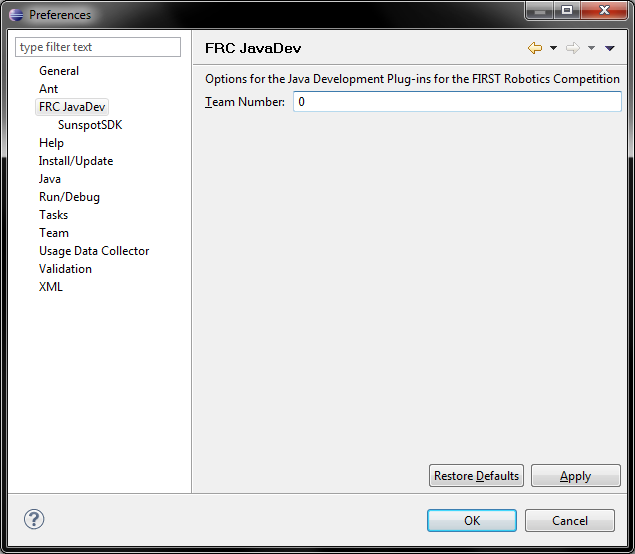

The main preference page contains general options, which most teams will need to access and modify to use the FRC Java Development tools.
The option on this page is used to configure the number of the team using the plug-ins. This is important when deploying to the cRIO, as it is used to calculate the IP address to send the project code to.